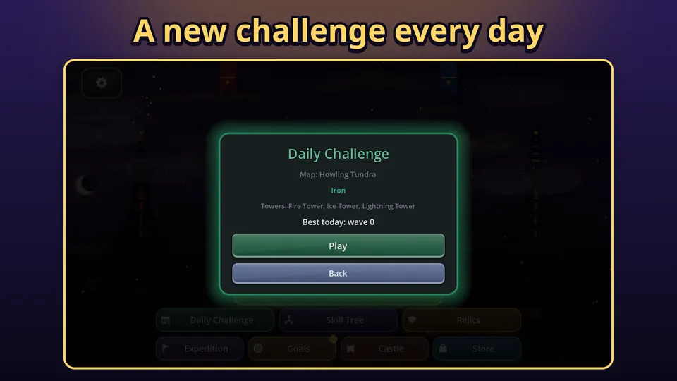
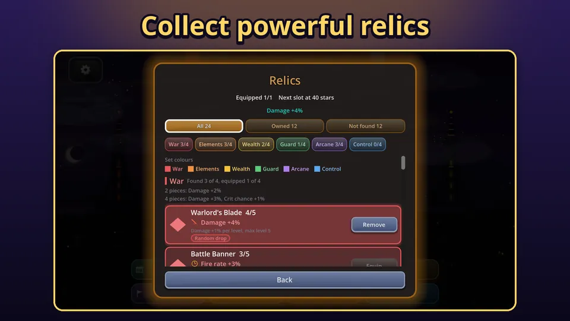

If you want to progress faster in Tower Defense Kingdom, the answer is mostly about gems and relics, and about doing the right thing each day. The campaign has 100 maps, and later maps need more power than your first towers can give you. That power comes from the skill tree, the castle and relics, all of which are fed by things you can do for free. This guide lists those sources in the order I would use them. If you are still on your first few maps, start with the beginner tips.
Where gems come from
Gems are the main long-term currency. You earn them from several places, and none of them needs money:
- Campaign wins: 5 gems per star plus one per wave, so replaying a map for a better star count pays again.
- Mutators: once a map has three stars you can add handicaps for a bigger gem multiplier, from 20 to 50 percent each.
- The daily challenge, endless mode, goals and the season track.
- Your castle, which pays gems on a timer.
Gems fund the skill tree and castle upgrades. The store also sells gem packs and bundles, and a VIP Pass that pays 25 gems and 250 gold a day, but nothing in the game is locked behind them. This guide is about the free route.
Do the daily challenge every day
Each UTC day has one fixed challenge, the same for every player: a map, one or two mutators and a set of allowed towers. You play it once as a run to see how many waves you can survive. It pays 2 gems per wave you reach, up to wave 50, and there is a streak bonus of 5 extra gems per consecutive day, up to 7 days. A short session a day adds up quickly, and a long streak is worth more than any single run.

Because the tower pool can be limited, the daily challenge is also a good way to learn the combos and fusion pairs you would not usually pick. See the combo guide for what each pair does.
Claim your castle
The castle earns while you are away and collects up to 8 hours of income at a time. Gems per 8 hours grow with its level, to 40 at level 10 and 60 at level 30, the maximum. Because a claim holds at most 8 hours, you can claim up to three times a day. Open the castle at the start of each session. Upgrading it costs gems, with the cost growing faster than the income after level 10, so it is a long-term sink rather than a first purchase.
Collect and equip relics
Relics are collectible items that give small, capped bonuses: damage, fire rate, range, gold, extra lives, combo damage and more. There are 24 in 6 sets of 4: war, elements, wealth, guard, arcane and control. Equip several from one set to unlock the 2 piece and 4 piece set bonuses.

Relics are never sold. They drop at random from three sources:
- Boss kills in campaign runs, at most 2 per run.
- New stars: winning a level with more stars than before.
- Season tier 30, the reward at the end of the season track.
A repeat drop raises that relic one level, up to its maximum. You unlock equip slots with total stars: the first at 10, then 40, 70 and 180. That is one more reason to chase stars on easy maps, because a better star count gives both gems and a chance at a drop. The expedition mode is different: its relic picks last for that run only and are not added to your collection.
Spend gems on the skill tree with a plan
The skill tree is where gems become power. The best early picks are the ones that help every run, such as more damage, faster fire and extra starting gold, rather than narrow ones. If you are stuck on a map, a few levels in the tree will usually help more than replaying the map again. On the field, fusing two well upgraded towers is the other big power jump, and it costs no gems at all.
Try endless mode and expeditions
Endless unlocks once you have a star on a map, and a boss arrives every 10 waves. You are paid 2 gems per wave beyond your personal best, with a total cap of 200 gems over the lifetime of the save, so it is a limited bonus, not a farm. Expeditions are a roguelite run: ten stages, one pool of 20 lives and a pick of one of three relics after each stage. Both modes are good for testing a build.
A weekly rhythm
- Daily: the daily challenge and a castle claim.
- Each session: one or two campaign maps, going for stars you have not yet got.
- When a map feels easy: replay it with a mutator for more gems.
- When you are stuck: spend gems on the tree and equip your best set.
Try it
Everything above is in the free game. Download Tower Defense Kingdom from Google Play, start your first daily streak, and see how far a few weeks of steady play takes you. New here? This overview explains the game in five minutes.
Frequently Asked Questions
How do I get gems in Tower Defense Kingdom?
Gems come from winning campaign levels, the daily challenge, endless mode, goals and the season track, mutator bonuses and your castle, which pays gems every 8 hours. Gems can also be bought in the store, but it is optional.
Where do relics come from?
Relics are never sold. They drop at random from boss kills in campaign runs, from winning a level with more stars than before, and as the reward of season tier 30. A repeat drop raises that relic one level.
What does the daily challenge give?
Each UTC day has one fixed run with a set map, mutators and tower pool, the same for everyone. It pays 2 gems per wave reached up to wave 50, plus a streak bonus of 5 gems per extra day, up to 7 days.